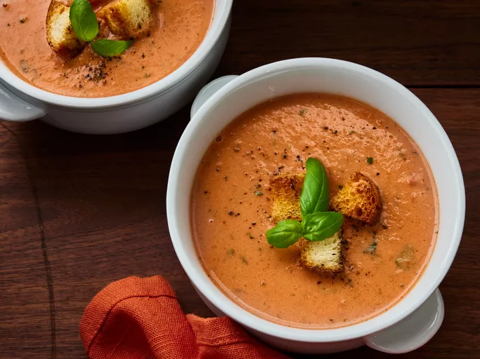

Lasagna
Back to Recipes

This tomato basil soup uses real butter, fresh basil, and heavy cream, which are the secrets to the richness of this soup.
This tomato and basil soup recipe features fresh ingredients, a decadent texture, and tons of flavor.
Ingredients
- 4 medium ripe tomatoes - peeled, seeded and diced
- 4 cups tomato juice
- 14 leaves fresh basil
- 1 cup heavy whipping cream
- ½ cup butter
- salt and pepper to taste
Steps
- Gather all ingredients.
- Place tomatoes and juice in a stockpot over medium heat; bring to a simmer. Cook until tomatoes have softened, about 30 minutes.
- Remove the pot from heat. Add basil leaves to the pot.
- Use an immersion blender to purée soup until smooth.
- Stir in heavy cream and butter. Cook and stir over medium heat until butter is melted, about 5 minutes. Do not boil. Season with salt and pepper.